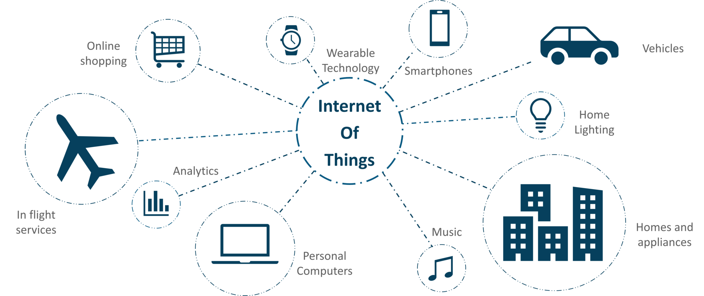

IK Computer With Technology Welcome in Technical world
Technology is the sum of techniques, skills, methods, and processes used in the production of goods or services or in the accomplishment of objectives, such as scientific investigation. Technology can be the knowledge of techniques, processes, and the like, or it can be embedded in machines to allow for operation without detailed knowledge of their workings. Systems applying technology by taking an input, changing it according to the system's use, and then producing an outcome are referred to as technology systems or technological systems.
Internet of Thing
Techopedia explains Internet of Things (IoT) The internet of things is a difficult concept to define precisely. In fact, there are many different groups that have defined the term, although its initial use has been attributed to Kevin Ashton, an expert on digital innovation.
airtificial intelligence
What Is Artificial Intelligence (AI)? Artificial intelligence (AI) refers to the simulation of human intelligence in machines that are programmed to think like humans and mimic their actions. The term may also be applied to any machine that exhibits traits associated with a human mind such as learning and problem-solving.
Cloud Computing
Cloud computing is the delivery of different services through the Internet. These resources include tools and applications like data storage, servers, databases, networking, and software.
.....
Information Page
Internet of Things
IoT (Internet of Things) is an advanced automation and analytics system which exploits networking, sensing, big data, and artificial intelligence technology to deliver complete systems for a product or service. These systems allow greater transparency, control, and performance when applied to any industry or system.
IoT systems have applications across industries through their unique flexibility and ability to be suitable in any environment. They enhance data collection, automation, operations, and much more through smart devices and powerful enabling technology.
This tutorial aims to provide you with a thorough introduction to IoT. It introduces the key concepts of IoT, necessary in using and deploying IoT systems.

Audience
This tutorial targets IT professionals, students, and management professionals who want a solid grasp of essential IoT concepts. After completing this tutorial, you will achieve intermediate expertise in IoT and a high level of comfort with IoT concepts and systems.
Prerequisites
This tutorial assumes general knowledge of networking, sensing, databases, programming, and related technology. It also assumes familiarity with business concepts and marketing.
IoT systems allow users to achieve deeper automation, analysis, and integration within a system. They improve the reach of these areas and their accuracy. IoT utilizes existing and emerging technology for sensing, networking, and robotics.
IoT exploits recent advances in software, falling hardware prices, and modern attitudes towards technology. Its new and advanced elements bring major changes in the delivery of products, goods, and services; and the social, economic, and political impact of those changes.
IoT − Key Features
The most important features of IoT include artificial intelligence, connectivity, sensors, active engagement, and small device use. A brief review of these features is given below −
AI − IoT essentially makes virtually anything “smart”, meaning it enhances every aspect of life with the power of data collection, artificial intelligence algorithms, and networks. This can mean something as simple as enhancing your refrigerator and cabinets to detect when milk and your favorite cereal run low, and to then place an order with your preferred grocer.
Connectivity − New enabling technologies for networking, and specifically IoT networking, mean networks are no longer exclusively tied to major providers. Networks can exist on a much smaller and cheaper scale while still being practical. IoT creates these small networks between its system devices.
Sensors − IoT loses its distinction without sensors. They act as defining instruments which transform IoT from a standard passive network of devices into an active system capable of real-world integration.
Active Engagement − Much of today's interaction with connected technology happens through passive engagement. IoT introduces a new paradigm for active content, product, or service engagement.
Small Devices − Devices, as predicted, have become smaller, cheaper, and more powerful over time. IoT exploits purpose-built small devices to deliver its precision, scalability, and versatility.
IoT − Advantages
The advantages of IoT span across every area of lifestyle and business. Here is a list of some of the advantages that IoT has to offer −
Improved Customer Engagement − Current analytics suffer from blind-spots and significant flaws in accuracy; and as noted, engagement remains passive. IoT completely transforms this to achieve richer and more effective engagement with audiences.
Technology Optimization − The same technologies and data which improve the customer experience also improve device use, and aid in more potent improvements to technology. IoT unlocks a world of critical functional and field data.
Reduced Waste − IoT makes areas of improvement clear. Current analytics give us superficial insight, but IoT provides real-world information leading to more effective management of resources.
Enhanced Data Collection − Modern data collection suffers from its limitations and its design for passive use. IoT breaks it out of those spaces, and places it exactly where humans really want to go to analyze our world. It allows an accurate picture of everything.
IoT − Disadvantages
Though IoT delivers an impressive set of benefits, it also presents a significant set of challenges. Here is a list of some its major issues −
Security − IoT creates an ecosystem of constantly connected devices communicating over networks. The system offers little control despite any security measures. This leaves users exposed to various kinds of attackers.
Privacy − The sophistication of IoT provides substantial personal data in extreme detail without the user's active participation.
Complexity − Some find IoT systems complicated in terms of design, deployment, and maintenance given their use of multiple technologies and a large set of new enabling technologies.
Flexibility − Many are concerned about the flexibility of an IoT system to integrate easily with another. They worry about finding themselves with several conflicting or locked systems.
Compliance − IoT, like any other technology in the realm of business, must comply with regulations. Its complexity makes the issue of compliance seem incredibly challenging when many consider standard software compliance a battle.
Artificial Intelligence
What is Artificial Intelligence?
According to the father of Artificial Intelligence, John McCarthy, it is “The science and engineering of making intelligent machines, especially intelligent computer programs”.
Artificial Intelligence is a way of making a computer, a computer-controlled robot, or a software think intelligently, in the similar manner the intelligent humans think.
AI is accomplished by studying how human brain thinks, and how humans learn, decide, and work while trying to solve a problem, and then using the outcomes of this study as a basis of developing intelligent software and systems.
What Contributes to AI?
Artificial intelligence is a science and technology based on disciplines such as Computer Science, Biology, Psychology, Linguistics, Mathematics, and Engineering. A major thrust of AI is in the development of computer functions associated with human intelligence, such as reasoning, learning, and problem solving.
Out of the following areas, one or multiple areas can contribute to build an intelligent system.
Programming Without and With AI
The programming without and with AI is different in following ways −
Programming Without AI
Programming With AI
A computer program without AI can answer the specific questions it is meant to solve.
A computer program with AI can answer the generic questions it is meant to solve.
Modification in the program leads to change in its structure.
AI programs can absorb new modifications by putting highly independent pieces of information together. Hence you can modify even a minute piece of information of program without affecting its structure.
Modification is not quick and easy. It may lead to affecting the program adversely.
Quick and Easy program modification.
What is AI Technique?
In the real world, the knowledge has some unwelcomed properties −
Its volume is huge, next to unimaginable.
It is not well-organized or well-formatted.
It keeps changing constantly.
AI Technique is a manner to organize and use the knowledge efficiently in such a way that −
It should be perceivable by the people who provide it.
It should be easily modifiable to correct errors.
It should be useful in many situations though it is incomplete or inaccurate.
AI techniques elevate the speed of execution of the complex program it is equipped with.
Applications of AI
AI has been dominant in various fields such as −
Gaming − AI plays crucial role in strategic games such as chess, poker, tic-tac-toe, etc., where machine can think of large number of possible positions based on heuristic knowledge.
Natural Language Processing − It is possible to interact with the computer that understands natural language spoken by humans.
Expert Systems − There are some applications which integrate machine, software, and special information to impart reasoning and advising. They provide explanation and advice to the users.
Vision Systems − These systems understand, interpret, and comprehend visual input on the computer. For example,
A spying aeroplane takes photographs, which are used to figure out spatial information or map of the areas.
Doctors use clinical expert system to diagnose the patient.
Police use computer software that can recognize the face of criminal with the stored portrait made by forensic artist.
Speech Recognition − Some intelligent systems are capable of hearing and comprehending the language in terms of sentences and their meanings while a human talks to it. It can handle different accents, slang words, noise in the background, change in human’s noise due to cold, etc.
Handwriting Recognition − The handwriting recognition software reads the text written on paper by a pen or on screen by a stylus. It can recognize the shapes of the letters and convert it into editable text.
Intelligent Robots − Robots are able to perform the tasks given by a human. They have sensors to detect physical data from the real world such as light, heat, temperature, movement, sound, bump, and pressure. They have efficient processors, multiple sensors and huge memory, to exhibit intelligence. In addition, they are capable of learning from their mistakes and they can adapt to the new environment.
Cloud Computing
What is Cloud?
The term Cloud refers to a Network or Internet. In other words, we can say that Cloud is something, which is present at remote location. Cloud can provide services over public and private networks, i.e., WAN, LAN or VPN.
Applications such as e-mail, web conferencing, customer relationship management (CRM) execute on cloud.
What is Cloud Computing?
Cloud Computing refers to manipulating, configuring, and accessing the hardware and software resources remotely. It offers online data storage, infrastructure, and application.
Cloud computing offers platform independency, as the software is not required to be installed locally on the PC. Hence, the Cloud Computing is making our business applications mobile and collaborative.
About
Technology, the application of scientific knowledge to the practical aims of human life or, as it is sometimes phrased, to the change and manipulation of the human environment.
The subject of technology is treated in a number of articles. For general treatment, see technology, history of; hand tool. For description of the materials that are both the object and means of manipulating the environment, see elastomers; industrial ceramics; industrial glass; metallurgy; mineral deposit; mineral processing; mining; plastic. For the generation of energy, see energy conversion; coal mining; coal utilization; petroleum production; petroleum refining. For treatment of food production, see agriculture, history of; agricultural economics; beekeeping; beer; cereal farming; coffee; commercial fishing; dairy farming; distilled spirit; food preservation; fruit farming; livestock farming; poultry farming; soft drink; tea; vegetable farming; wine. For the techniques of construction technology, see bridge; building construction; canals and inland waterways; dam; harbours and sea works; lighthouse; roads and highways; tunnels and underground excavations; environmental works. For the manufacture and design of the means of transportation, see aerospace industry; automotive industry; ship construction. For communications technology, see broadcasting; computer science; information processing; photography; printing; photoengraving; typography; telecommunication. For the processes and products of other manufacturing industries, see adhesive; clothing and footwear industry; dye; explosive; floor covering; forestry; chemical industry; man-made fibre; surface coating; papermaking; soap and detergent; textile. For medical applications of technology, see diagnosis; therapeutics; drug; medicine, history of; pharmaceutical industry. For military applications, see military technology. For treatment of the organization of technological systems, see automation; engineering; production system; systems engineering; work, history of the organization of.